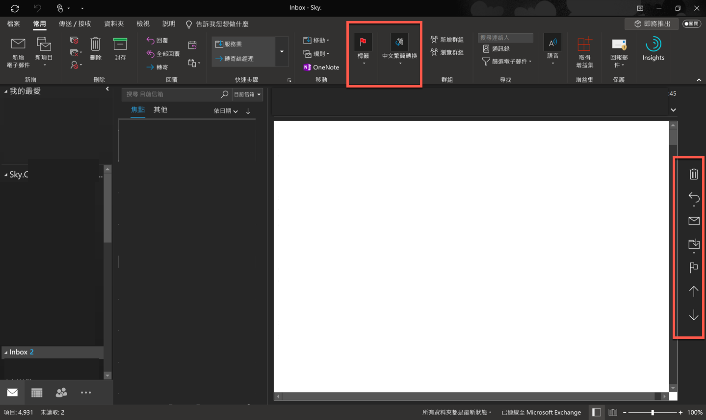
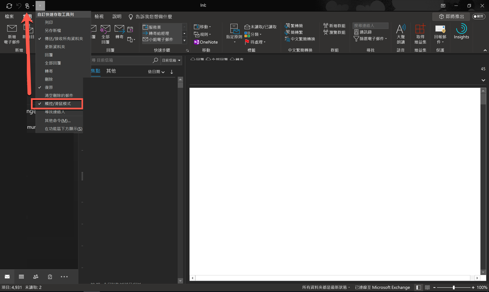

解決與碎碎念
隨著 VS 2019 的 Release，身為一個開發控，當然就是要來重裝一下整台電腦啦：而剛好隨著 4 月的連假，剛好可以拿來做這種事情，不然，你想想，連續這幾天，外出也都是人，窩在家裡看著進度條跑到 100% ，不是一件很開心的事情嗎！？
當然，原本屬於開心的事情，結果今天卻遇到了一個問題：就是安裝完 O365 後，打開 Outlook，想看一下安裝狀況…
結果！！怎麼和我預期的畫面不太一樣！！

如上圖，右邊多了一排 Menu，然後上面的 Menu 也變得很大！！
好，其實也不是第一次遇到這個問題了，算一算這應該算是第二次遇到了，不過就是因為已經第二次遇到，然後整個下午都在找，當初是怎麼調回來了，所以一整個火大後，決定紀錄一下這篇～～
當然，這不是什麼 O365 偉大的更新，也不是未來就又長的這樣：其實這個樣子，主要是提供給大家方便用觸控的時候，可以輕易地選到 ( 點到 ) 想要的功能：的確是很貼心，但當找不到怎麼改回來的時候，就會很切心～～
好，抱怨那麼多後，到底要如何切換呢？答案不是進入複雜的選單，而是在這裡！！！

沒錯，這邊有一個 滑鼠 / 觸控 模式的切換，只要按下這個切換就可以正常了…
後記
好吧，事後想想，搞不好還是出去溜搭溜搭比較快了 QQ…
參考資料
- 無，印象…